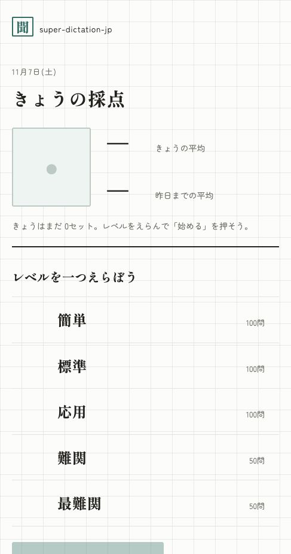
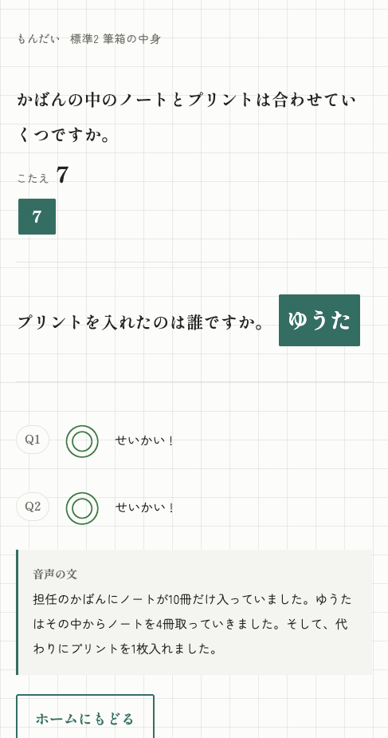

12 quizzes per question, 5 questions per set
Each audio clip comes with two quizzes. One set is 5 questions worth 10 points. Checking shows ◎◯△✕ marks and the sentence of the audio.
Web · Every question has audio · 400 patterns, 800 questions · Free
A daily listening drill for elementary and junior high students. Each page plays about 20 seconds of audio once, then asks two quizzes. After checking your answers you can replay the audio as many times as you like, so you can go back and catch what you missed.


“Listen → answer → check”, all on one page.
Each audio clip comes with two quizzes. One set is 5 questions worth 10 points. Checking shows ◎◯△✕ marks and the sentence of the audio.
From “Easy” with no math, through multiplication/division and extra information in “Hard”, to date-spanning “Hardest”. 400 patterns and 800 questions in total.
Each question plays its audio once (pausing and resuming mid-play is fine). After checking your answers, the “listen” button at the top lets you replay it as many times as you like.
Word answers go in one box; number answers use one box per digit. Tapping a box opens a choice popup, so young learners can answer without typing.
The home screen shows today's score, the average up to yesterday and a 7-day history. Data is stored only on the device (IndexedDB) — no ads, no analytics, no account.
New here? The home screen has a 5-question demo with real audio that leaves no record — try it on the spot.
Each question is three steps: listen, answer, check. Finish 5 questions and you get your score.
Tap “listen to the audio” and hear a short passage. The questions stay blurred until the audio has played to the end.
Answer two quizzes. Words go into one box, numbers one box per digit; tapping a box opens a popup with the choices.
Marks (◎◯△✕) and the sentence of the audio appear. From here you can replay the audio to catch anything you missed.
Five levels raise the difficulty of listening and thinking step by step.
| Level | Questions | What it covers |
|---|---|---|
| Easy | 100 (20 patterns × 5) | No math. Listen to three sentences and answer right away. |
| Standard | 100 | Indirect questions via pronouns; a little addition and subtraction. |
| Advanced | 100 | Trickier math and relationships between people. |
| Hard | 50 | Multiplication and division; watch out for extra information. |
| Hardest | 50 | Train delays, dates across midnight — more content and concepts. |
| URL | https://sd-jp.pages.dev/ |
|---|---|
| Price | Free (no ads, no analytics, no account) |
| Questions | 400 patterns × 2 quizzes = 800 questions (5 per set, 10 points max) |
| Audio | Generated audio for all 400 questions. One play per question (pause/resume allowed); free replay after checking answers |
| Input | Box style (words = 1 box / numbers = per-digit boxes with place labels), 4-choice, free text |
| Records | On-device only (IndexedDB). Today's score, average up to yesterday, 7-day history |
| Source code | github.com/oriyu90/super-dictation-jp (MIT License) |
No install, no sign-up. The 5-question audio demo leaves no record, so you can try it right away.